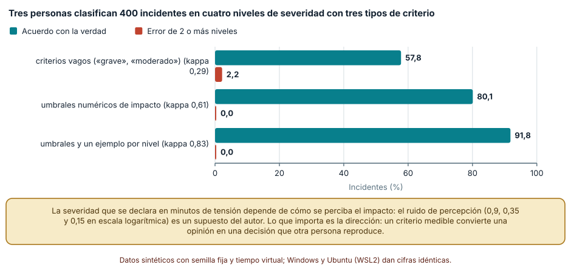
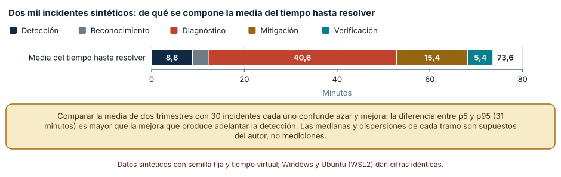
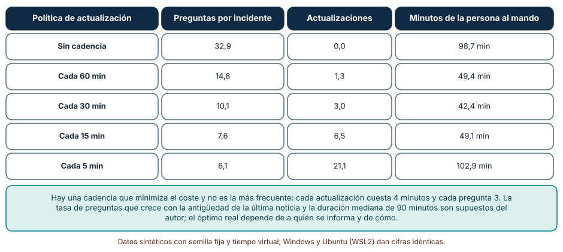

← SE-427 — Runbooks, on-call y escalamiento · ↑ Parte 35 · 📚 Índice completo · 🌐 Portal · SE-429 — Postmortems sin culpa y aprendizaje →
Punto profesional y fundamento pedagógico
Punto profesional. La clase existe para que coordines una respuesta en la que participan varias personas: quién decide, quién opera, quién comunica y quién escribe; cómo se declara y se clasifica un incidente; cada cuánto se informa y a quién; y cómo se miden los tiempos sin engañarse con un promedio. Un incidente mal gestionado multiplica su daño con la confusión, aunque el arreglo técnico sea sencillo.
Por qué aparece aquí. Sigue a Runbooks, on-call y escalamiento: allí una persona resolvía una alerta con un procedimiento; aquí el incidente supera ese alcance y exige coordinación. Prepara SE-429, donde lo ocurrido se convierte en aprendizaje. El caso conductor sigue siendo la API de entregas.
Error conceptual que debe corregir. Creer que lo importante de un incidente es entender la causa y que el tiempo medio de resolución mide la calidad de la respuesta. Mitigar viene antes que entender, la comunicación es parte de la resolución y un promedio de unos pocos incidentes mezcla azar y mejora.
Secuencia de aprendizaje. Antes de ver los resultados predices qué tramo domina el tiempo de resolución, cuánto varía la media de un trimestre sin que cambie nada y qué cadencia de actualizaciones minimiza el tiempo que la persona al mando pierde en responder preguntas. Después contrastas con tres experimentos y escribes el protocolo de incidentes de la API. La secuencia usa predicción, explicación propia, contraste y recuperación. ICAP distingue participación de construcción de conocimiento; How People Learn II respalda diseñar la práctica con contextos reales y retroalimentación.
Evidencia de aprendizaje. incidentes-log.md con la predicción, las tres figuras reproducidas, un protocolo de incidentes con roles, severidades y cadencia de comunicación y una nota que separe lo simulado de lo que habría que medir con incidentes propios.
Límite de la conclusión. Los incidentes, sus tiempos, las preguntas de las partes interesadas y las clasificaciones de severidad son sintéticos y con semilla fija. No se observó ningún incidente ni equipo real; el coste de 3 minutos por pregunta y 4 por actualización son supuestos del autor.
Trazabilidad fuente → afirmación
| Fuente primaria u oficial | Afirmación que respalda | Lo que no prueba |
|---|---|---|
| Google SRE: Managing Incidents | Describe roles (comando, operaciones, comunicaciones, planificación), la declaración temprana y los riesgos de un incidente sin coordinación. | No fija los roles de tu equipo. |
| Google SRE Workbook: Incident Response | Muestra casos de respuesta, la importancia de ensayar los roles y de separar mitigación y análisis. | No mide tus tiempos. |
| PagerDuty Incident Response | Documenta públicamente roles, severidades y la comunicación durante un incidente. | No es un estándar. |
| Atlassian Incident Management Handbook | Describe el ciclo de vida de un incidente y la comunicación con partes interesadas. | No prueba la cadencia óptima. |
| Cohen, «A coefficient of agreement for nominal scales» (1960) | Define el estadístico kappa para medir el acuerdo entre evaluadores descontando el azar. | No dice qué kappa es suficiente. |
Antes de empezar
Recupera lo aprendido en SE-427: un runbook y una guardia resuelven lo previsto. La pregunta activa es: cuando la API de entregas cae en pleno cierre de plazo y la solución no está en ningún runbook, ¿quién decide, quién habla con las universidades y cómo sabemos si estamos mejorando?
Prerrequisitos
- Haber completado
SE-427o poder explicar qué es una guardia y un escalamiento. - Python 3.11 o posterior; los experimentos usan solo la biblioteca estándar (
random,math). - Nociones de media, mediana y percentil (
SE-376).
Problema auténtico
La API de entregas cae a las 14:03 del día del plazo. En diez minutos hay 23 personas en el canal del incidente: ingeniería, soporte, dos directivos y alguien de una universidad. Tres personas proponen revertir, dos proponen reiniciar la base, una pregunta por qué no se probó antes. Nadie sabe quién decide. Soporte responde a cada institución por separado, con mensajes que se contradicen. La dirección pregunta cada cinco minutos «¿cómo va?», y quien podría arreglarlo contesta en vez de operar. A las 15:20 el servicio vuelve: lo arregló una reversión que propuso alguien a los diez minutos. El informe del trimestre dice que el tiempo medio de resolución mejoró de 74 a 62 minutos; con 30 incidentes en el trimestre, esa diferencia está dentro del azar. La clase enseña a evitar los tres errores: sin roles, sin cadencia y sin estadística.
Objetivos observables
Al terminar podrás:
- asignar roles (comando, operaciones, comunicaciones, escriba) y describir qué hace y qué no hace cada uno;
- clasificar la severidad con criterios medibles y comprobar el acuerdo entre personas;
- descomponer el tiempo de un incidente en tramos y decidir qué tramo mejorar;
- distinguir la mejora real del azar al comparar medias de pocos incidentes;
- fijar una cadencia de comunicación que reduzca las interrupciones de quien dirige la respuesta.
Mapa conceptual
Ver la notación fuente del diagrama
flowchart LR
A[Alerta o reporte] --> B[Declarar incidente]
B --> C[Clasificar severidad]
C --> D[Asignar roles]
D --> E[Comando]
D --> F[Operaciones]
D --> G[Comunicaciones]
D --> H[Escriba]
F --> I[Mitigar]
I --> J[Verificar]
G --> K[Actualizar a las partes]
J --> L[Cerrar y pasar a análisis]
K -->|preguntas| EEl mapa separa decidir (comando), hacer (operaciones), informar (comunicaciones) y registrar (escriba). La flecha de preguntas hacia el comando muestra la interrupción que la comunicación periódica debe reducir.
Temas y por qué importan
| Tema | Por qué cambia una decisión profesional | Evidencia mínima |
|---|---|---|
| Declarar y clasificar | Una severidad clara decide quién se involucra y con qué urgencia. | Predicción, traza causal y contraejemplo de Declarar y clasificar en incidentes-log.md |
| Roles | Separar decidir, operar e informar evita que todos hagan todo. | Predicción, traza causal y contraejemplo de Roles en incidentes-log.md |
| Mitigar antes de entender | Reducir el daño es la prioridad; la causa se analiza después. | Predicción, traza causal y contraejemplo de Mitigar antes de entender en incidentes-log.md |
| Medir tiempos | Un promedio de pocos incidentes engaña. | Predicción, traza causal y contraejemplo de Medir tiempos en incidentes-log.md |
| Comunicación | La cadencia reduce preguntas y mantiene la confianza. | Predicción, traza causal y contraejemplo de Comunicación en incidentes-log.md |
Conceptos y decisiones
1. Declarar y clasificar
Un incidente es un evento que degrada o amenaza el servicio de un modo que requiere una respuesta coordinada y no rutinaria. Declararlo pronto tiene un coste bajo (una persona avisa, se abre un canal) y es mucho más barato que declararlo tarde, cuando ya hay confusión. La severidad clasifica el impacto en niveles (por ejemplo, 1 a 4) y decide quién se involucra, con qué rapidez y con qué comunicación. Un criterio útil usa magnitudes observables: fracción de personas afectadas, funciones no disponibles, pérdida de datos, duración prevista. Una clasificación que dice «grave» o «moderado» depende de quien la lee; una que dice «más del 10 % de las entregas falla o hay pérdida de datos» se puede aplicar igual por dos personas. Se puede subir o bajar la severidad durante el incidente, y conviene registrar cuándo y por qué.
Acuerdo entre tres personas
Se genera un impacto latente (lognormal) para 400 incidentes y se asigna su severidad verdadera con tres umbrales. Tres personas perciben el impacto con un error multiplicativo (σ = 0,9, 0,35 y 0,15 en escala logarítmica según el criterio sea vago, numérico o numérico con un ejemplo por nivel) y clasifican. Se calcula el kappa de Cohen entre pares, el acuerdo con la severidad verdadera y los errores de dos o más niveles.
raters = [[sev(x * math.exp(rng.gauss(0, sigma))) for x in latent] for _ in range(3)]
kappa = (po - pe) / (1 - pe) # acuerdo observado menos el esperado por azar| Criterio | Kappa medio | Acuerdo con la verdad | Error de 2 o más niveles |
|---|---|---|---|
| Criterios vagos («grave», «moderado») | 0,29 | 57,8 % | 2,2 % |
| Umbrales numéricos de impacto | 0,61 | 80,1 % | 0 % |
| Umbrales y un ejemplo por nivel | 0,83 | 91,8 % | 0 % |

Cómo leer la figura. Cada fila es un tipo de criterio; el kappa descuenta el acuerdo que ocurriría por azar. Con criterios vagos el acuerdo apenas supera al azar (0,29) y casi tres de cada cinco clasificaciones coinciden con la verdad; con umbrales y ejemplos se llega a 0,83. Dónde deja de valer: el ruido de percepción (0,9, 0,35 y 0,15) es un supuesto del autor, no una medición de ninguna persona; el impacto latente de una lognormal y los cuatro niveles también lo son. Un kappa alto indica que dos personas clasifican igual, no que clasifiquen bien: los umbrales pueden estar mal.
2. Roles
Separar los roles evita que quien sabe arreglar el problema pase el tiempo explicándolo. El comandante (o dirección del incidente) decide, prioriza y mantiene el cuadro general; no opera. Las operaciones diagnostican y aplican las acciones. Las comunicaciones informan a las partes interesadas con una cadencia fija y filtran las preguntas. El escriba registra la línea de tiempo, las decisiones y las acciones, lo que alimenta el análisis posterior. Un incidente pequeño puede tener una persona en dos roles; lo que no se puede es que quien opera también comunique. Los roles se ensayan antes: asignarlos por primera vez en pleno incidente pierde minutos.
3. Mitigar antes de entender
La prioridad de un incidente es reducir el daño, no encontrar la causa. Las mitigaciones habituales (revertir un despliegue, desviar tráfico, desactivar una funcionalidad, añadir capacidad) se aplican con una hipótesis débil y se verifican con la señal del SLI. Encontrar la causa raíz espera a que el servicio vuelva, cuando hay tiempo y datos intactos. Dos riesgos acompañan a esta regla: mitigar de forma que destruya evidencia (reiniciar sin guardar el estado) y mitigar de forma que empeore (un cambio sin reversión). El runbook (SE-427) y la tabla de preguntas (SE-421) existen para que la mitigación sea una decisión informada.
4. Medir tiempos
El tiempo hasta resolver se descompone en tramos: detección (desde que empieza hasta que se alerta), reconocimiento (hasta que alguien acepta), diagnóstico (hasta tener una hipótesis que funcione), mitigación y verificación. Cada tramo tiene su propio dueño y su propia palanca: la detección depende de las alertas, el diagnóstico de las señales y de los runbooks. Las siglas habituales (MTTD, MTTA, MTTR) resumen cada tramo con una media, que es un estadístico engañoso cuando la distribución tiene cola larga y muestra pequeña: unos pocos incidentes largos mueven la media y una buena racha se confunde con una mejora.
De qué se compone el tiempo
Se generan 2 000 incidentes sintéticos con tiempos lognormales por tramo (medianas de 6, 3, 25, 12 y 5 minutos, con dispersiones distintas). Se calculan la media, la mediana y los percentiles del total; el reparto de la media; la variación de la media de un trimestre de 30 incidentes (4 000 remuestreos) y el efecto de reducir a la mitad la mediana de un tramo.
window = [sum(rng.choice(total) for _ in range(30)) / 30 for _ in range(4000)]
lo, hi = pct(window, 5), pct(window, 95) # rango de la media de un trimestre| Medida | Resultado |
|---|---|
| Tiempo total: media / mediana / p90 / p99 | 73,5 / 58,9 / 125,6 / 259,8 min |
| Reparto de la media | detección 8,8; reconocimiento 3,4; diagnóstico 40,6; mitigación 15,4; verificación 5,4 min |
| Media de 30 incidentes (p5 a p95 de 4 000 trimestres) | de 59,9 a 91,1 min con la misma práctica |
| Media si se reduce a la mitad la mediana de detección / diagnóstico / mitigación | 68,9 / 53,6 / 65,6 min |

Cómo leer la figura. Las dos primeras filas describen la distribución y su composición; la tercera, cuánto varía la media de un trimestre por azar; la cuarta, qué palanca pesa más. El diagnóstico es más de la mitad de la media, y mejorarlo ahorra 20 minutos frente a 5 de la detección. Dónde deja de valer: las medianas y dispersiones por tramo son supuestos del autor, y los tramos son independientes en el modelo; en la realidad un diagnóstico difícil suele ir con una detección tardía. La anchura del rango (31 minutos) es mayor que la mejora de adelantar la detección: comparar dos trimestres de 30 incidentes no distingue ambas. Para comparar hay que usar medianas, percentiles y todos los incidentes, y aceptar que algunas mejoras no son visibles hasta tener más datos.
5. Comunicación durante el incidente
Comunicar tiene tres públicos: el equipo de respuesta (canal propio, solo quien opera y decide), las partes internas (dirección, soporte) y las personas usuarias (página de estado, mensajes a instituciones). Las actualizaciones siguen una cadencia anunciada («próxima actualización a las 14:30, aunque no haya novedades») y un formato fijo: qué sabemos, qué no sabemos, qué estamos haciendo y cuándo habrá novedades. Una actualización sin novedades también informa. La cadencia no elimina las preguntas, las desplaza: se responden en las actualizaciones y no en mensajes dirigidos a quien opera. La confianza de las instituciones depende más de la regularidad y la honestidad de los mensajes que de la rapidez del arreglo.
Cadencia de actualizaciones
Se simulan 1 500 incidentes de duración lognormal (mediana de 90 minutos). Las preguntas de las partes interesadas llegan con una tasa que crece con la antigüedad de la última noticia (0,05 por minuto, multiplicada por 1 + antigüedad/15 minutos). Cada pregunta cuesta 3 minutos de quien dirige y cada actualización, 4.
asks_total += poisson(rng, 0.05 * (1 + (minute - last) / 15))
if cadence and (minute + 1) % cadence == 0: last = minute + 1| Política | Preguntas por incidente | Actualizaciones | Minutos de la persona al mando |
|---|---|---|---|
| Sin cadencia | 32,9 | 0 | 98,7 |
| Cada 60 min | 14,8 | 1,3 | 49,4 |
| Cada 30 min | 10,1 | 3,0 | 42,4 |
| Cada 15 min | 7,6 | 6,5 | 49,1 |
| Cada 5 min | 6,1 | 21,1 | 102,9 |

Cómo leer la figura. Cada fila es una política; la última columna suma el coste de responder y de actualizar. Hay un mínimo en la cadencia de 30 minutos y los dos extremos cuestan lo mismo: no informar y informar de más. Dónde deja de valer: la tasa de preguntas que crece con la antigüedad y los costes de 3 y 4 minutos son supuestos del autor; no se midió ningún incidente. El resultado enseña la forma de la curva, no la cadencia correcta: depende de quién pregunta, de la gravedad y de si el comunicador es una persona distinta de quien dirige.
Definiciones de trabajo
- incidente: evento que degrada o amenaza el servicio y exige una respuesta coordinada.
- severidad: nivel que clasifica el impacto de un incidente y decide la respuesta.
- comandante del incidente: persona que decide y prioriza durante el incidente sin operar.
- cadencia de actualización: intervalo anunciado en el que se informa del estado, haya o no novedades.
- kappa de Cohen: estadístico que mide el acuerdo entre dos evaluadores descontando el acuerdo esperado por azar.
Las definiciones son operativas para la API de entregas. No convierten términos con una historia más amplia en sinónimos y deben contrastarse con la documentación primaria enlazada al final.
Ejemplo mínimo
El fragmento calcula el kappa de Cohen de dos personas que clasifican diez incidentes. Antes de ejecutarlo, predice el resultado.
a = [1, 2, 2, 3, 4, 1, 2, 3, 3, 4]
b = [1, 2, 3, 3, 4, 1, 2, 2, 3, 4]
n = len(a)
po = sum(x == y for x, y in zip(a, b)) / n
pe = sum((a.count(c) / n) * (b.count(c) / n) for c in range(1, 5))
print(round((po - pe) / (1 - pe), 2))Imprime 0.73: un acuerdo observado de 0,8 con uno esperado por azar de 0,26. Registra versión de Python, comando y salida; luego cambia dos clasificaciones y observa cuánto cae.
Ejemplo profesional
Supón, como caso hipotético de la plataforma y no como medición, que el equipo escribe el protocolo de incidentes de la API de entregas. Severidades: 1 (más del 10 % de las entregas falla o hay pérdida de datos), 2 (entre 1 % y 10 %), 3 (degradación sin pérdida visible), 4 (sin impacto externo). Las severidades 1 y 2 abren un canal propio con cuatro roles: comando, operaciones, comunicaciones y escriba, con suplentes asignados por rotación. Las comunicaciones publican en la página de estado una actualización inicial en 10 minutos y después cada 30, aunque no haya novedades, con el formato «qué sabemos, qué no, qué hacemos, próxima actualización». Quien dirige no opera y no contesta mensajes directos; si alguien propone una acción, la nombra y la asigna a operaciones. La mitigación precede al análisis: ante una severidad 1 por un despliegue reciente, la primera acción es revertir y verificar el SLI. Para medir, el escriba registra los cinco tiempos de cada incidente y el informe trimestral muestra mediana y percentil 90 con todos los incidentes, sin comparar medias de 30. Cada seis meses se hace un ejercicio de incidente con roles asignados por sorteo. El equipo no concluye que su respuesta es buena: concluye que ahora podría saber si empeora.
Práctica guiada
- Predice el reparto de la media por tramo y el rango de la media de 30 incidentes.
- Ejecuta
python scripts/experiments_part35_b.py e428y compara; anota la mayor diferencia con tu predicción. - Cambia el tamaño del trimestre de 30 a 120 incidentes y mide cómo se estrecha el rango.
- Cambia el coste de una pregunta de 3 a 1 minuto y encuentra la cadencia que minimiza el tiempo de la persona al mando.
- Escribe la tabla de severidades de un servicio propio con umbrales numéricos y un ejemplo por nivel.
- Haz que dos personas clasifiquen diez incidentes pasados con tu tabla y calcula el kappa.
- Entrega
incidentes-log.mdy pide a otra persona que encuentre un incidente real que tu tabla clasifique de forma ambigua.
Ejercicios
- Severidad: clasifica con tu tabla tres incidentes (un fallo del 3 % de las entregas durante una hora, una pérdida de 200 registros y una lentitud en el listado) y justifica.
- Kappa: dos personas clasifican 20 incidentes con acuerdo observado de 0,85 y esperado de 0,40; calcula el kappa y di si lo consideras suficiente.
- Tiempos: descompón un incidente de 95 minutos en los cinco tramos con datos inventados y decide qué tramo mejorarías primero.
- Cadencia: diseña el formato de una actualización de 4 líneas y escribe la primera de un incidente de severidad 2.
Reto verificable
Entrega incidentes-log.md con la predicción, las tres tablas de resultados reproducidas con las mismas semillas, el protocolo de incidentes de un servicio propio con severidades medibles, roles y cadencia, y el kappa de dos personas sobre diez incidentes. Se aprueba si otra persona ejecuta el código desde un checkout limpio, obtiene los mismos números y aplica tu tabla de severidades a un caso nuevo con el mismo resultado que tú. No se aprueba por describir roles sin ensayarlos ni por comparar medias de un trimestre.
Caso conductor
La API de entregas es el caso conductor de la Parte 35. Esta clase deja el octavo artefacto: un protocolo de incidentes con roles, severidades medibles y cadencia. SE-429 pregunta cómo convertir lo ocurrido en aprendizaje sin buscar culpables, y SE-430 cómo prepararse para el peor caso. Cambia después un solo parámetro, la cadencia, y observa dónde está el mínimo del tiempo de quien dirige.
Preguntas frecuentes
¿Quién debe ser el comandante del incidente?
Quien tenga la mejor visión general y la capacidad de decidir, no necesariamente quien más sabe del sistema. En muchos equipos se rota y se entrena el rol. Lo importante es que sea una sola persona y que sepa que no opera.
¿Por qué no resolver primero y comunicar después?
Porque la comunicación es parte de la respuesta: las instituciones toman decisiones con lo que saben (reprogramar un plazo, avisar a su alumnado). Un silencio de una hora genera más preguntas y más trabajo que una actualización breve. Además, separar el rol libera a quien opera.
¿Es el tiempo medio de resolución una buena métrica?
Es una métrica pobre. Es sensible a pocos incidentes largos, se mueve por azar con muestras pequeñas y mezcla tramos con palancas distintas. Se prefieren la mediana y los percentiles de todos los incidentes, los tramos por separado y un SLO que mida el efecto en las personas.
¿Cuándo se declara un incidente?
Cuando se necesita coordinación que un runbook y una persona no cubren. En caso de duda, se declara: el coste de un incidente innecesario es una conversación, y el de uno tardío es la confusión.
Fallo controlado y diagnóstico
Reproduce el fallo clásico de la clase: declarar mejora comparando la media de dos trimestres de 30 incidentes. Remuestrea 4 000 trimestres de la misma distribución y mide el rango de la media.
Registra síntoma, entrada mínima, hipótesis, observación que descarta cada hipótesis, causa, corrección y prueba de regresión. Síntoma: el informe dice que la media pasó de 74 a 62 minutos tras un cambio de proceso. Hipótesis rivales: (a) el nuevo proceso mejoró la respuesta; (b) hubo menos incidentes graves; (c) la media de 30 incidentes varía mucho por azar. Prueba: calcula el rango p5 a p95 de la media sin cambiar nada; si va de 60 a 91 minutos, la diferencia de 12 minutos está dentro del azar y la hipótesis (c) basta para explicarla. Conclusión: no hay evidencia de mejora. Regresión: añade al informe la mediana, el percentil 90, el rango de variación esperado por azar y una regla de no declarar mejora si la diferencia cae dentro de él. No cambies a la vez la métrica y el proceso.
Errores comunes y cómo corregirlos
| Síntoma | Causa probable | Corrección |
|---|---|---|
| Veinte personas opinan y nadie decide | Sin comandante ni roles | Asignar roles al declarar el incidente |
| Quien arregla contesta preguntas | Sin comunicaciones y sin cadencia | Rol de comunicaciones y actualizaciones periódicas |
| Dos personas clasifican distinto | Severidad con criterios vagos | Umbrales numéricos y un ejemplo por nivel |
| La media mejora y no se sabe si es real | Pocos incidentes y variación por azar | Medianas, percentiles y rango esperado |
| Se busca la causa mientras el servicio sigue caído | Se antepone el análisis a la mitigación | Mitigar y verificar primero, analizar después |
Entorno y archivos clave
work/SE-428/
├── README.md
├── incidentes/
│ ├── tiempos.py
│ ├── comunicacion.py
│ └── severidad.py
├── protocolo/severidades.md
├── tests/test_incidentes.py
└── evidence/incidentes-log.mdEl README declara plataforma, versión de Python, semillas y comandos. Los experimentos usan solo la biblioteca estándar y se ejecutaron con CPython 3.12.9 en Windows 11 y 3.12.3 en Ubuntu bajo WSL2 con cifras idénticas. Para recuperar el estado, borra work/SE-428/ y repite los scripts. Si añades una dependencia, fija procedencia y versión.
Seguridad, ética y accesibilidad
- los mensajes públicos de un incidente no deben revelar datos personales ni detalles que faciliten un ataque mientras el sistema sigue vulnerable;
- un incidente de seguridad o de datos personales tiene obligaciones de notificación propias: involucra a quien corresponda (privacidad, legal) desde la declaración;
- la presión de un incidente expone a las personas: rota los roles, impón descansos en incidentes largos y trata los errores como información;
- las actualizaciones de estado deben ser accesibles: texto claro, sin depender del color, con una alternativa a la página visual;
- documenta las tablas y las figuras con texto alternativo y en un formato que un lector de pantalla pueda recorrer, y respeta las licencias de los libros y artículos.
Puente hacia el trabajo con agentes
Un agente al que se le pide «ayuda con este incidente» tenderá a proponer diagnósticos extensos y a ejecutar comandos de remediación en cuanto el contexto se lo permita. Pídele en cambio que actúe como escriba o como analista de lectura: que mantenga la línea de tiempo con horas, que resuma el estado cada treinta minutos en el formato acordado, que proponga hipótesis con la señal que las confirma y que no ejecute nada con efectos sin que el comandante lo apruebe de forma explícita. Revisa especialmente los comandos destructivos, las afirmaciones de causa sin evidencia y los resúmenes que omiten lo que se desconoce.
Transferencia
Traslada el protocolo a otro servicio (un sistema de pagos o una plataforma de contenidos): define severidades medibles, roles y cadencia, y verifica el acuerdo entre dos personas. La transferencia está lograda cuando puedes decir qué incidente clasificaría distinto cada persona y cómo lo resolverías, no cuando existe una plantilla.
Evaluación y evidencia
| Criterio | Evidencia para aprobar |
|---|---|
| comprensión | explicación de roles, de mitigar antes de entender y de la limitación de los promedios |
| corrección | tablas de severidad, de tiempos y de cadencia reproducibles con las mismas semillas |
| diseño | protocolo con severidades medibles, roles y cadencia y kappa entre dos personas |
| diagnóstico | reproducción del fallo «mejora por comparar medias de 30 incidentes» con regresión |
| incertidumbre | declaración de que los incidentes, los tiempos y las preguntas son sintéticos |
| reproducibilidad | versiones, comandos, salida y límites declarados |
Fuentes
- Google SRE: Managing Incidents — roles y gestión de incidentes; autoridad: libro de ingeniería de confiabilidad de Google.
- Google SRE Workbook: Incident Response — casos de respuesta y ensayo de roles; autoridad: Google, SRE Workbook.
- PagerDuty Incident Response — roles y comunicación; autoridad: documentación pública de PagerDuty.
- Atlassian Incident Management Handbook — ciclo de vida y comunicación; autoridad: documentación pública de Atlassian.
- Cohen, «A coefficient of agreement for nominal scales» — kappa de Cohen; autoridad: Educational and Psychological Measurement, 1960.
Cada fuente respalda el mecanismo indicado; ninguna demuestra que un kappa de 0,83, una media de 73,5 minutos con rango de 59,9 a 91,1 o una cadencia de 30 minutos se observen en un equipo real. Esa afirmación depende del equipo, del servicio y de los incidentes.
Límites y siguiente paso
Se ejecutaron tres experimentos con tiempo virtual y semillas fijas en Windows y Ubuntu (WSL2) con resultados idénticos. No se observó ningún incidente ni equipo real; los tiempos por tramo, el ruido de percepción de la severidad, la tasa de preguntas, los costes de 3 y 4 minutos y la independencia entre tramos son construcciones del autor. La siguiente clase pregunta cómo convertir lo ocurrido en aprendizaje que cambie el sistema, sin buscar a quién culpar.
Glosario
- incidente: evento que degrada o amenaza el servicio y exige una respuesta coordinada.
- severidad: nivel que clasifica el impacto de un incidente y decide la respuesta.
- comandante del incidente: persona que decide y prioriza durante el incidente sin operar.
- cadencia de actualización: intervalo anunciado en el que se informa del estado, haya o no novedades.
- kappa de Cohen: estadístico que mide el acuerdo entre dos evaluadores descontando el acuerdo esperado por azar.
← SE-427 — Runbooks, on-call y escalamiento · ↑ Parte 35 · 📚 Índice completo · 🌐 Portal · SE-429 — Postmortems sin culpa y aprendizaje →